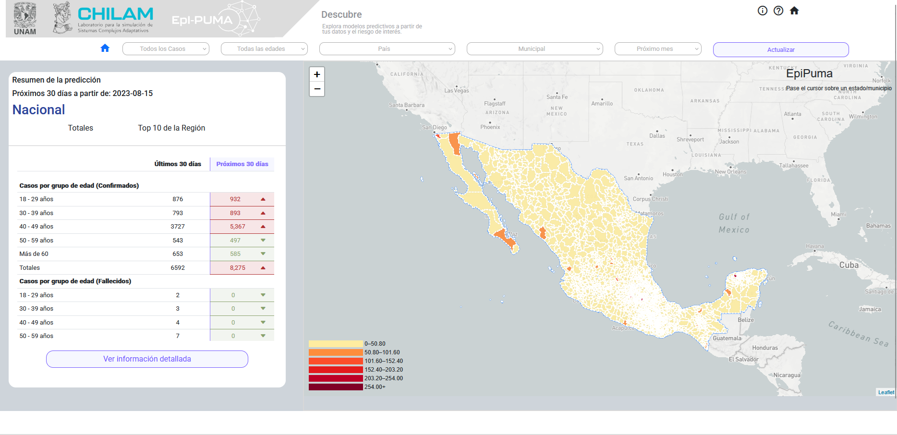

Systems I've built — from sign-language translation to hospital object detection and epidemiological intelligence platforms.
Real-Time Deep Learning System for Sign Language Translation
Abstract
Communication is one of the most important rights of a healthy individual. Hearing-impaired citizens face major challenges: there is no single universal sign language, and only a small share of the population understands any given one. This system translates the Mexican Sign Language into text using convolutional neural networks. Signs are captured across hundreds of images, and the system translates them through several convolutional stages and transfer learning at 91% accuracy.
Citation
S.-M. Alejandro and N.-C. J. Antonio, “A real-time deep learning system for the translation of Mexican sign language into text,” 2021 Mexican International Conference on Computer Science (ENC), Morelia, Mexico, 2021, pp. 1–7, doi: 10.1109/ENC53357.2021.9534825.
Keywords: Transfer learning, gesture recognition, assistive technologies, feature extraction, sign-language interpretation, convolutional neural networks, deep learning, single-page application, Flask.
Web-Deployed Object Detection for Hospital Efficiency — YOLOv8
Abstract
Hospital operational efficiency directly shapes patient outcomes, yet traditional, manually-managed systems are prone to error. This project trains a YOLOv8 model to detect classes relevant to hospital operations — ambulances, beds, wheelchairs, stethoscopes, medical equipment, stretchers, band-aids, and towels — deployed to the web via React.js and TensorFlow.js so it runs across computers, smartphones, and tablets. Integrated with hospital management systems, it improves resource tracking and lets staff focus more on patient care. Published in the 2023 Mexican International Conference on Computer Science (ENC).
Citation
A. Salinas-Medina and A. Neme, “Enhancing Hospital Efficiency Through Web-Deployed Object Detection: A YOLOv8-Based Approach for Automating Healthcare Operations,” 2023 Mexican International Conference on Computer Science (ENC), Guanajuato, Mexico, 2023, pp. 1–6, doi: 10.1109/ENC60556.2023.10508642.
Keywords: YOLOv8, web applications, deep learning, detection and recognition, hospital operation efficiency, healthcare, hospital management systems.
UI/UX Design Leadership — Proyecto 42 & Epipuma
Proyecto 42 — Deep Data for Obesity & Metabolic Disease
As UI/UX lead, I helped design and build Proyecto 42, an interdisciplinary platform assembling one of the most comprehensive datasets for the study of obesity and metabolic disease — over 7,000 participants and thousands of variables spanning genetics, physiology, psychology, sociology, economics, and public policy. A machine-learning modeling layer lets researchers explore this deep dataset for holistic, scalable insight.
Epipuma — Epidemiological Intelligence for SARS-CoV-2

I also led UI/UX for Epipuma, a real-time platform for tracking and projecting COVID-19 dynamics across Mexico. It supported national, regional, and hospital-level decisions by visualizing infection trends, capacity forecasts, and mortality predictions — pairing Bayesian ML models with interfaces tailored for clinicians and policymakers, so predictive models could be generated without ML expertise.
Citation
Salinas Medina, A., García Peña, G. E., Gordillo, J. L., Calero, R., Romero Martínez, P., Jurado Jiménez, K., González-Salazar, C., & Stephens, C. R. (2023). EpI-PUMA: Plataforma Universitaria de Inteligencia Epidemiológica de SARS-CoV-2, Versión 1.0. Revista TIES, Número 7.